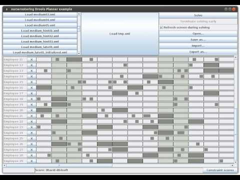

Continuous planning video
Every week, a hospital needs to create a nurse roster. That roster needs to continue from last week’s roster, without changing the past. Also, nurses want to know their free days weeks in advance. This is known as the problem of continuous planning. Here’s a video how Drools Planner deals with it.

This implementation is based on immovable planning entities, which works just as well for other use cases (such as vehicle routing, course scheduling, task scheduling, …).
Immovable planning entities
Drools Planner 5.5.0.Beta1 will directly support immovable planning entities in the new selector framework, making it much easier to do continuous planning:
To make some planning entities immovable, simply add an entity SelectionFilter that returns true if an entity is movable and false if it is immovable:
public class MovableShiftAssignmentSelectionFilter implements SelectionFilter<ShiftAssignment> {
public boolean accept(ScoreDirector scoreDirector, ShiftAssignment shiftAssignment) {
ShiftDate shiftDate = shiftAssignment.getShift().getShiftDate();
NurseRoster nurseRoster = (NurseRoster) scoreDirector.getWorkingSolution();
return nurseRoster.getNurseRosterInfo().isInPlanningWindow(shiftDate);
}
}
And configure it like this:
@PlanningEntity(movableEntitySelectionFilter = MovableShiftAssignmentSelectionFilter.class)
public class ShiftAssignment {
...
}